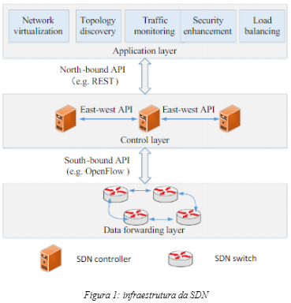
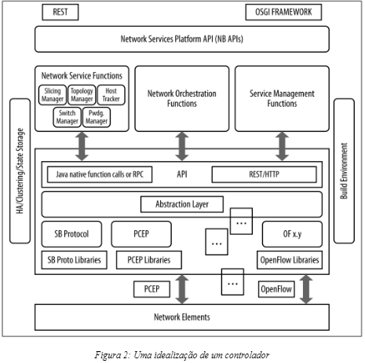
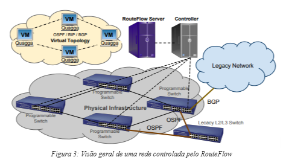

Arquitetura
Software Defined Networks possuem uma arquitetura de rede cuja principal característica é a separação da lógica de controle do encaminhamento de pacote de dados, tornando as aplicações e o controle da rede programáveis.
A arquitetura de uma rede SDN é dividida em três camadas: camada de aplicação, camada de controle e camada de infraestrutura (dados), como é possível verificar na imagem abaixo:

Camada de aplicação
A função da camada de aplicação é fazer com que operadoras de rede operem rapidamente ao receberem comandos de requisitos de negócios, para isso, ela contém um conjunto de funções de rede e aplicativos para otimizar o desempenho e aumentar a segurança da rede. Na camada de aplicação, ficam os controladores de otimização, firewalls, autenticação e controladores de entrega de aplicativos. A camada de aplicação opera em cima da camada de controle, e possui programas que possibilitam a comunicação via API com limite norte de instruções de redes ao controlador SDN, como por exemplo, a API REST.
Os operadores de rede da camada de aplicação conseguem alterar os caminhos dos pacotes via programação centralmente nos controladores SDN, isso porque a camada de controle abstrai os recursos físicos para a camada de aplicação, evitando que a aplicação precise configurar os switches físicos um a um no caminho de dados do pacote.
Camada de controle
A camada de controle é responsável por controlar e gerenciar toda a rede. Ela é o cérebro da SDN. A comunicação do controlador SDN com o switch é feito via API de limite sul, como o OpenFlow, e visualiza globalmente toda a topologia de rede na camada de encaminhamento de dados. A camada de controle também é responsável por rodar alguns protocolos de roteamento, como o OSPF e o BGP, para que o encaminhamento de dados da próxima camada (camada de dados) rode com base nas instruções passadas pelo controlador.
A fim de melhorar a disponibilidade e a escalabilidade dos recursos de rede, as implementações recentes da arquitetura SDN conseguem suportar múltiplos controladores distribuídos. Na arquitetura com vários controladores, cada um dos controladores individuais é responsável por operar uma parte dos switches. A fim de se manter o trabalho uniforme, colaborativo e de status consistente, os controladores individuais SDN comunicam-se na rede via APIs com limite leste-oeste.
Camada de dados
A camada de encaminhamento de dados é formada por múltiplos switches SDN fisicamente interligados por mídia com ou sem fio. Os switches são dispositivos simples que encaminham pacotes de rede com base em regras usadas para decisões de encaminhamento, presentes na tabela de encaminhamento, a Flow Table. A tabela de fluxo é composta de itens que possuem três campos: a ação a ser executada, o contador e um padrão.
Este último campo de padrão, define o padrão de fluxo composto pelo conjunto de valores do cabeçalho do pacote.
Quando um pacote de dados é recebido, o switch busca na sua Tabela de Fluxo uma regra correspondente aos campos do cabeçalho. Assim que o switch acha a regra certa, o contador da regra aumenta e a ação é executada. Se o switch não encontrar a tal regra, ele irá notificar o controlador para buscar ajuda ou realizar o descarte do pacote. É importante ressaltar que os itens da regra de encaminhamento não são criados pelo nó do switch, mas sim “empurrados” pelo controlador da camada de controle.
Ferramentas
Controladores
O controlador de rede surge como um nível na arquitetura que concentra as tarefas de manipulação dos dispositivos de rede, oferecendo um nível de abstração mais alto para o desenvolvedor através de APIs - Application Programming Interface. Isso é necessário porque definindo interfaces de programação para elementos de chaveamento, o controle separado de cada switch traria limitações como as do desenvolvimento de software ligado diretamente a um elemento de hardware, já que seria preciso lidar com tarefas de baixo nível que não são escaláveis para todos os hardwares.
Assim, o controlador concentra a comunicação com todos os elementos programáveis da rede e oferece uma visão unificada do seu estado. A partir desse diagnóstico, outros comandos podem ser executados, criando novas funcionalidades mais específicas. A visão centralizada que o controlador fornece é um dos pontos fortes da utilização de SDNs, pois com ela é possível debugar a rede mais rapidamente, além de fornecer meios de otimizar as decisões operacionais do sistema.

Segundo a descrição padrão de um controlador, esse sistema deve conter, de maneira simplificada:
- O gerenciamento do estado de redes que, em alguns casos, pode incluir uma base de dados para armazenar as informações provenientes dos elementos de rede.
- Um modelo de dados de alto nível que engloba as relações entre os recursos gerenciados e outros serviços fornecidos pelo controlador.
- Uma API que transmita os serviços do controlador para a aplicação, o que facilita a interação entre eles. Essa interface é renderizada pelo modelo de dados que descreve as funcionalidades do controlador.
Open Flow
OpenFlow foi originalmente desenvolvido como parte de pesquisa em redes na Universidade de Stanford. Seu foco inicial era a possibilidade de criar protocolos experimentais na rede do campus. Acabou sendo, porém, de extrema importância para o surgimento de Redes Definidas por Softwares, sendo os componentes principais do modelo OpenFlow, a própria definição de SDNs:
- A separação do controle em planos de dados.
- Um protocolo padrão entre controlador e agente de rede, para implementar o instanciamento do estado.
- Programação da rede a partir de um ponto centralizado, usando APIs.
Assim, OpenFlow é um conjunto de protocolos associado a uma API, onde o controlador atua apenas com as instruções dessa API.
Os protocolos OpenFlow são divididos em duas partes: a primeira delas, a parte do protocolo de cabo, é para estabelecer uma sessão de controle, definindo uma estrutura de mensagem para troca de modificações de fluxo, além de coletar estatísticas e definir a estrutura fundamental de um switch. A segunda parte é para configurar e gerenciar o protocolo que aloca os switchs físicos para um controlador específico, definindo alta acessibilidade e comportamentos de controlador com falha de conexão.
Com o padrão OpenFlow, prioriza-se o uso de equipamentos de redes comerciais para pesquisa e experimentação de novos protocolos de rede, o que facilita que os resultados das pesquisas sejam transferidos para a indústria.
No plano de dados, o encaminhamento de pacotes é gerenciado com base em regras simples associadas a cada entrada da tabela de encaminhamento do comutador de pacotes.
São elas:
- Encaminhamento do pacote para uma determinada porta do dispositivo
- Alteração de parte dos cabeçalhos
- Descarte do pacote
- Encaminhamento do pacote para inspeção por um controlador da rede
Já o plano de controle permite que o controlador da rede programe as entradas da tabela de encaminhamento com padrões que identifiquem fluxos de interesse e regras associadas a eles. O elemento controlador pode ser um módulo de software implementado de forma independente em algum ponto da rede.
As especificações das mensagens no OpenFlow definem a comunicação entre os switches e o controlador. São três tipos de mensagens: “controller-switch”, assíncrona e simétrica.
A mensagem “controller-switch” é iniciada no controlador, usada para gerenciamento do status do switch. A mensagem assíncrona é enviada pelo switch, mas sem solicitação do controlador, e é usada para informar atualizações no switch, como chegada de pacotes, mudança do estado do switch ou eventuais erros. Por fim, a mensagem simétrica é enviada tanto do switch quanto do controlador, e também sem solicitação de nenhum dos lados. Uma mensagem simétrica importante, por exemplo, é a “Hello”, usada para início de conexão entre controlador e switch.
Em um simples fluxo que não estaria registrado na tabela de fluxos, a sequência de mensagens seria um packet-in, mensagem assíncrona, indicando que um pacote novo chegou e que o controlador deve especificar por qual rota ele deve ser encaminhado, e para isso viria o packet-out, mensagem “controller-switch”. Essa sequência ignora outras mensagens, como mensagens de conexão ou de informações de estado.
Routeflow
RouteFlow é um projeto desenvolvido para SDN que fornece serviços de roteamento IP totalmente virtualizados em hardwares que são próprios para OpenFlow. Ele interliga a infraestrutura do tipo OpenFlow a um ambiente composto por máquinas virtuais (VMs), cada um dos RouteFlow realizando seu próprio mecanismo de roteamento. O RouteFlow instrui os switches por meio de controladores OpenFlow que fazem a função de proxies, realizando a tradução das informações de protocolos e eventos nos ambientes virtuais e físicos.
As máquinas virtuais são interligadas de modo dinâmico, formando da topologia lógica um espelho da estrutura física.
O RouteFlow pode ser separado em 3 partes, são elas:
- RouteFlow Protocol: aqui se concentram os comandos de configuração de máquinas virtuais
- RouteFlow Slaves: os slaves realizam a comunicação das máquinas virtuais com o controlador. Essas aplicações são executadas nas próprias VMs
- RouteFlow Controller: gerencia todo o recebimento de pacotes, conexão entre as máquinas virtuais e os computadores e o estado de cada computador
Na figura abaixo, é possível ter uma visão geral de uma rede controlada pelo RouteFlow:

Flowvisor
O FlowVisor atua como um controlador de rede, sendo responsável pela divisão do espaço de endereçamento disponível na rede OpenFlow. Nesse esquema, fatias da rede são definidas pela união, interseção e/ou diferença de valores dos diversos campos disponíveis para identificar os fluxos OpenFlow.
Uma instância do FlowVisor se coloca entre os diversos controladores e os dispositivos físicos e os comandos desses controladores são observados para garantir que as regras geradas por eles não ultrapassem a definição do domínio daquele controlador de rede.
Ao mesmo tempo, mensagens enviadas pelos switches OpenFlow são inspecionadas e direcionadas para o controlador apropriado do OpenFlow, em função do seu domínio de origem.
Open vSwitch
Open vSwitch é a ferramenta open source implementada em softwares como parte do hypervisor que roda no servidor. Esse visor é responsável por encaminhar pacotes das máquinas virtuais, tanto saindo quanto chegando.
Com a possibilidade de criação de múltiplos switchs virtuais, inclusive em máquinas físicas diferentes, também é possível automatizar a rede a partir de sua programação. Nesses switchs, é possível implementar diversos protocolos, inclusive o OpenFlow, além de definir controladores como o POX e o NOX.
Segurança na SDN
Quando olhamos para as redes SDN, é possível constatar que em relação a segurança, elas são mais propensas a ataques quando comparadas às redes tradicionais. Isso ocorre em virtude do desacoplamento do controlador e da camada de dados, que embora traga vantagens quando se olha para segurança, também oferece desvantagens.
As vantagens são:
- Monitoramento eficaz de tráfego anormal: um controlador SDN percebe, simultaneamente, todo o tráfego de rede. Assim, nota-se facilmente anormalidades no tráfego de rede.
- Tempo hábil para tratar vulnerabilidades: Por ser uma rede definida por software, se uma nova ameaça for encontrada, facilmente os operadores da rede podem programar um software que vai tratar a vulnerabilidade da rede em tempo hábil. Em redes tradicionais, é necessário esperar por uma atualização do SO ou software aplicativo integrado nos dispositivos.
Já as desvantagens são:
- Controlador vulnerável: as funções estão majoritariamente concentradas no controlador SDN, o que diminui a complexidade de eventuais ataques. Se um invasor conseguir acessar o controlador, ele consegue causar um estrago tão grande nos serviços de rede, podendo levar à parada de toda a rede que o controlador é responsável.
- Riscos causados por interfaces programáveis abertas: por serem naturalmente abertas, as redes definidas por software são mais expostas a falhas de segurança quando se comparadas a redes tradicionais, pois se os invasores obtiverem o controle do controlador, conseguem informações para planejar um ataque. Soma-se a isso a gama de interfaces programáveis para a camada de aplicação, abrindo portas para o invasor colocar seu próprio programa.
- Outros pontos de ataque: por estar dividida em três camadas, as redes definidas por software podem ser separadas por locais distintos da rede, proporcionando mais pontos de ataques quando se comparada a redes tradicionais. Abaixo, listamos alguns pontos vulneráveis:
- Links entre switches: os pacotes de dados que navegam entre os switches na maioria das vezes não são criptografados. Um invasor pode fazer a interceptação desses pacotes.
- Links entre os switches e o controlador: as regras de encaminhamento de dados são ditadas pelo controlador. Se o invasor realizar espionagem no link entre os switchs e o controlador, consegue mudar essas regras e mudar o curso dos pacotes de dados.
- Links entre os controladores: como mencionado anteriormente, no ambiente multicontrolador, cada controlador individual precisa se comunicar com os outros para manter o status correto de trabalho. Os invasores conseguem interceptar os pacotes entre controladores e obter informações suficientes para tomar os controladores.
Conclusão
Durante muito tempo, as redes convencionais dominaram o mundo da tecnologia e possibilitaram grandes avanços tecnológicos. Entretanto, com o passar do tempo, foi-se observando que essas redes não estavam mais acompanhando a era tecnológica, pois, entre outros fatores, elas não atendiam prontamente às mudanças de regras de negócios dos clientes. As redes definidas por software surgiram como uma solução para esse e outros problemas, pois, fazem o switch responder de forma rápida e escalável aos comandos da camada de controle.
Referências
- MEDHI, Deep; RAMASAMY, Karthiky. Network Routing: Algorithms, Protocols, and Architectures.
- NADEAU, Thomas D. ; GRAY, Ken. SDN - Software Defined Networks. Disponível em: https://ridhanegara.staff.telkomuniversity.ac.id/files/2017/04/Thomas-D.-Nadeau-Ken-Gray-SDN-Software-Defined-Networks-O_039_Reilly-Media-2013.pdf, acesso em: 05/10/2022
- https://sdn.systemsapproach.org/index.html, acesso em: 05/10/2022
- https://blog.algartelecom.com.br/geral/o-que-e-sdn-software-defined-network-e-como-funciona/, acesso em: 05/10/2022
- https://opennetworking.org/sdn-definition/, acesso em: 05/10/2022
- https://en.wikipedia.org/wiki/Software-defined_networking, acesso em: 05/10/2022
- http://homepages.dcc.ufmg.br/~mmvieira/cc/papers/minicurso-sdn.pdf, acesso em: 05/10/2022
- https://www.researchgate.net/publication/290477553_Security_in_Software-Defined_Networking_Threats_and_Countermeasures, acesso em: 05/10/2022
- https://acervolima.com/arquitetura-de-redes-definidas-por-software-sdn/, acesso em: 06/10/2022
- https://www.monografias.com/pt/trabalhos3/redes-definidas-software/redes-definidas-software2.shtml, acesso em: 06/10/2022
- https://www.ic.unicamp.br/~edmundo/MC822/mc822/MO655/Introdu%C3%A7%C3%A3o%20a%20SDN%20e%20OpenFlow.pdf, acesso em: 10/10/2022